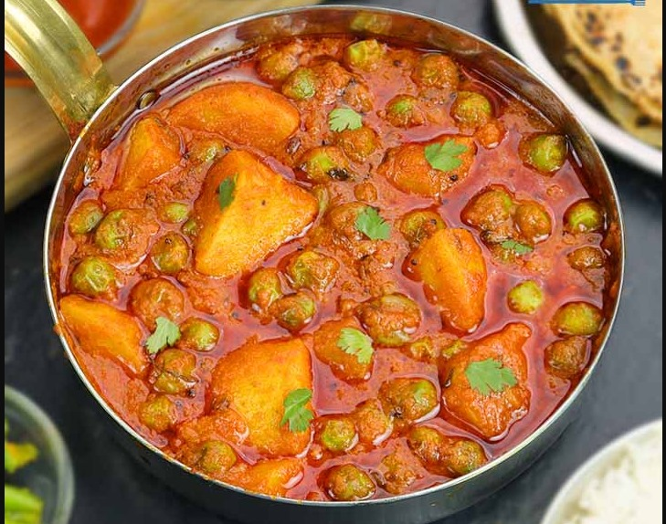

|  |
-
વટાણા બટેકાં નું શાક સામગ્રી:
- ૩/૪ કપ તાજા અથવા ફ્રોજન લીલા વટણા (લગભગ ૧૦૦ ગ્રામ)
- ૨ મધ્યમ બટાકા, છાલ ઉતારેલાં અને ટૂકડાંઓમાં કાપેલા (લગભગ ૨૫૦ ગ્રામ)
- ૧ મોટું ટમેટું, બારીક સમારેલું (લગભગ ૧/૨ કપ)
- ૨ ટેબલસ્પૂન તેલ
- ૧/૪ ટીસ્પૂન રાઈ
- ૧/૨ ટીસ્પૂન જીરું
- ૨ ટીસ્પૂન ધાણાજીરું
- ૩/૪ ટીસ્પૂન લાલ મરચું પાઉડર
- ૧/૨ ટીસ્પૂન હળદર
- ૨ ટેબલસ્પૂન કોથમીર, બારીક સમારેલી
- મીઠું, સ્વાદ અનુસાર
- ૩/૪ કપ પાણી
|
વટાણા બટેકાં નું શાક બનાવવાની રીત:
|
- બટાકાની છાલ ઉતારો અને તેને પાણીથી ધોઈ નાખો. તેને ૧/૨ ઇંચનાં ટૂકડાંઓમાં કાપી લો. આ રેસીપીમાં ફ્રોજન વટાણાનો ઉપયોગ કરવામાં આવ્યો છે પણ તમે ઉપલબ્ધતા પ્રમાણે તાજા કે ફ્રોજન કોઈપણ વટાણાનો ઉપયોગ કરી શકો છો.
- એક પ્રેશર કુકરમાં મધ્યમ આંચ ઉપર ૨ ટેબલસ્પૂન તેલ ગરમ કરો. તેમાં રાઈ નાંખો; જ્યારે તે તતડવા લાગે, ત્યારે તેમાં જીરું નાંખો.
- જ્યારે જીરું આછું સોનેરી થવા લાગે, ત્યારે તેમાં ઝીણું સમારેલું ટમેટું નાંખો.
- તેને ચમચાંથી હલાવો અને ટમેટાનાં ટૂકડાંઓ નરમ થઈ જાય ત્યાં સુધી પકાવો. તેમાં ૨ ટીસ્પૂન ધાણાજીરું, ૩/૪ ટીસ્પૂન લાલ મરચું પાઉડર અને ૧/૨ ટીસ્પૂન હળદર નાંખો.
- તેને હલાવો અને ૧ મિનિટ માટે પકાવો.
- તેમાં બટાકાનાં ટૂકડાંઓ, લીલા વટાણા અને મીઠું નાંખો.
- તેને ચમચાથી હલાવો અને ૨-૩ મિનિટ માટે પકાવો.
- તેમાં ૩/૪ કપ પાણી નાંખો અને બરાબર મિક્સ કરો.
- પ્રેશર કુકરને બંધ કરો અને મધ્યમ આંચ ઉપર ૨ સીટી થાય ત્યાં સુધી પકાવો.
- ગેસ બંધ કરો અને કુકરની વરાળ(પ્રેશર) આપમેળે નીકળવા દો. પ્રેશર નીકળી જાય પછી ઢાંકણું ખોલી નાંખો. શાકને બરાબર મિક્સ કરો અને ચાખો. જો જરૂર લાગે, તો વધારે મીઠું નાંખો અને બરાબર મિક્સ કરો.
- જો શાકમાં રસો વધારે હોય અથવા પાણી જેવું પાતળું હોય, તો તેને થોડી વાર માટે અથવા પસંદ પ્રમાણે ઘાટું થાય ત્યાં સુધી પકાવો. તેને સમારેલી કોથમીરથી સજાવો. આલુ મટરનું શાક પીરસવા માટે તૈયાર છે.
|